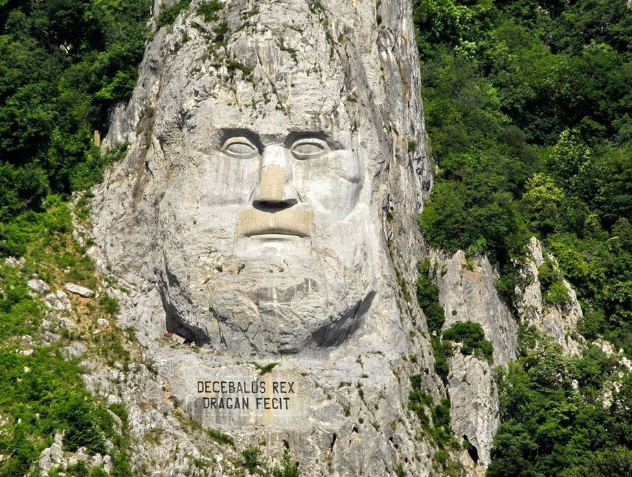
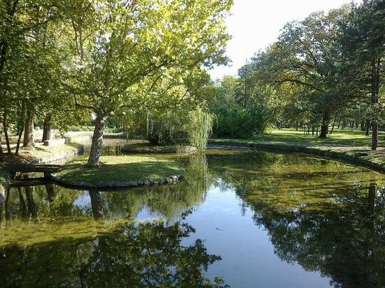

Nalazi se u sjeveroistočnom dijelu Srbije, na samoj granici s Rumunjskom. Park se prostire na povrišini od 636,8 kilometara kvadratnih. Osnovni prirodni fenomen ovog područja je 100 km duga Đerdapska klisura, najduži i najveći klanac u Europi kroz koju protječe rijeka Dunav. Zahvaljujući zaštićenom položaju, tzv. „Gvozdena vrata“ štite više od 60 šumskih zajednica i šikara od kojih su mnoge relikti tercijarnih šumskih zajednica. Park se prostire na oko 100 km desne obale Dunava, od Golupca do Karataša kod Kladova, i obuhvaća uski šumoviti brdsko-planinski pojas uz Dunav, širine 2-8 km, koji se izdiže iznad Dunava od 50-800 metara nadmorske visine. Ovo područje je proglašeno nacionalnim parkom 1974. godine.
Uvač je snažna zlatiborska rijeka dubokog korita i prelijepih kanjona. On predstavlja južnu granicu Zlatibora. Uvac je glavna pritoka rijeke Lim. Nekoliko zadnjih kilometara, rijeka Uvac predstavlja granicu između BiH i Srbije. Dio pruge Beograd – Bar prolazi rijekom Uvac, taj dio je inače sporan i pripada BiH. Na samom Uvcu se nalaze i sela Štrpci, naselje Uvac u blizini graničnog prijelaza Uvac. Na rijeci Uvac su također izgrađene HE Kokin Brod, HE Uvac i tri umjetna jezera: Sjeničko, Zlatorsko i Radoinjsko. Voda iza Radoinjskog jezera provodi se tunelom dužine 8 km, i kroz dvije cijevi dužine 1 234 m, s padom od 377 m, dovodi do turbina HE Bistrica, a zatim otječe u Lim. To je promijenilo prirodni tok rijeke Uvač
Iako nije odvojen nikakvim ogradama ni zidinama od grada, ulaskom u park osjećate se kao da ste ušli u potpuno drugi svijet. Oazu mira i zelenila u kojo vlaada tišina i najglasnije su vaše misli. Park se nalazi između općine „Savski venac“ i Čukarica, ali nerijetko ga posjećuju ljudi iz čitavog Beograda. Smješten u dolini Topčiderske rijeke, ovaj park je proglašen za kulturno dobro od izuzetnog značaja za Srbiju. Po čitavom parku se nalaze staze za šetnju, cvjetne aleje i travnjaci. Put će vas ubrzo dovesti do drvenog mostića sa kamenim bedemom iznad jezera, koje je sve popularnije među mladenicima.“
